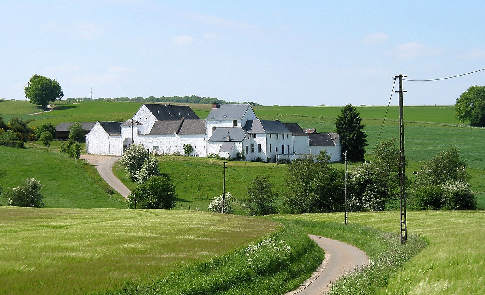

La FermeLa Ferme des Villes, se situant à Saint-Denis est une ferme de 5 hectares crée en 2016. Une grande diversité d'animaux y est présente avec notamment 6 vaches, plus de quarante brebis, des chèvres, des lapins, des cochons, des ânes.. La majorité de ces animaux ont été données par des associations de lutte contre la maltraitance animale. En plus des animaux, nous possédons aussi un potager composé de salades, carottes, poireaux, potirons, courges et arbres fruitiers. Des ruches ont aussi été mises en place récemment. |
Une Ferme ParticipativeLa Ferme des Villes n'est pas une simple ferme, c'est une ferme participative. C'est à dire que nous accueillons tous ceux souhaitant participer à sa vie d'une manière ou d'une autre. Que ce soit pour entretenir les locaux, le potager, s'occuper des bêtes ou encore animer les ateliers. Depuis le début, nous accueillons des jeunes en réinsertion sociale ou en difficulté dans le cadre de travaux d'intérêt général ou d'un accompagnement vers l'emploi. |
|  |
Une Ferme PédagogiquePlusieurs initiatives, comme notamment les Ateliers proposent une alternative sur d'importantes thématiques telles que :
Ces différentes thématiques sont très importantes pour nous et devraient l'être pour tout le monde afin de préserver notre planète et de se diriger vers un futur meilleur. Pour en savoir plus, n'hésitez pas à nous contacter et à nous rendre visite ! |